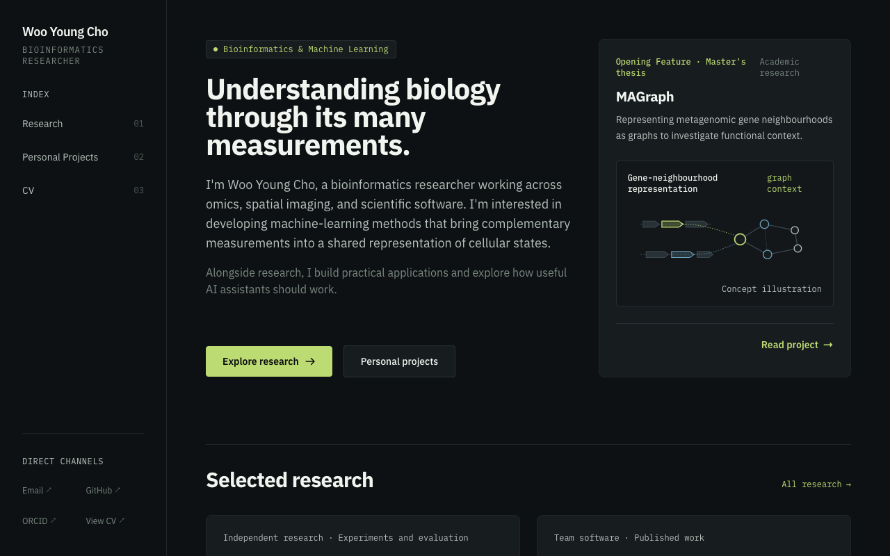
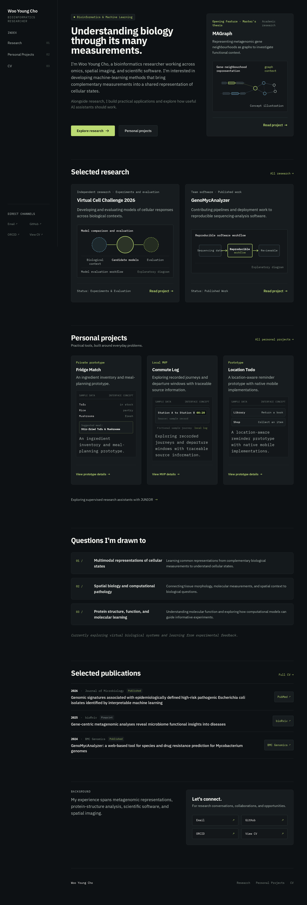
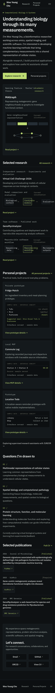
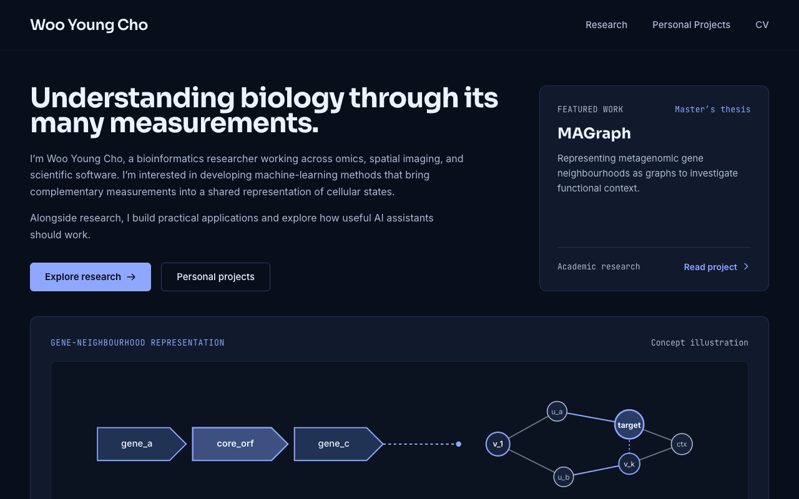
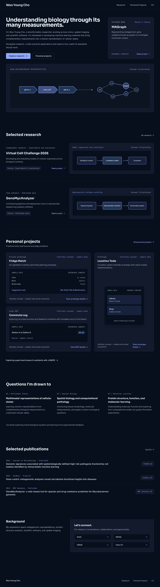

C · Carbon Atlas
Graphite, sage accents and a navigation rail. A more technical, structured portfolio.

Full desktop image

Full mobile image

New sans-serif typography, dark surfaces and distinct compositions. C uses a structured graphite layout; D takes a navy, image-led approach. Website application code is unchanged.
Project illustrations and sample interfaces are design placeholders. HTML previews load external font/CSS resources; internal project routes are illustrative.Graphite, sage accents and a navigation rail. A more technical, structured portfolio.



Deep navy, blue accents and a visual gallery. A more expressive presentation of the projects.

